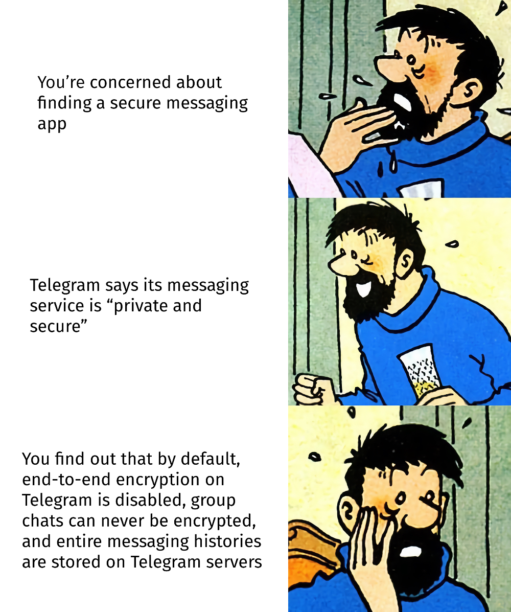
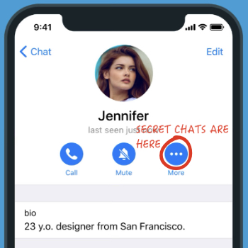

Is Telegram as secure and private as it claims to be?
Save imageTelegram is a freemium cross-platform messaging service that launched in 2013. As of today, it is available on all major desktop and mobile platforms with native apps for Android, iOS, Windows, macOS, and Linux. Telegram was founded by brothers Nikolai and Pavel Durov, who previously launched a Russian Facebook clone VKontakte (later renamed to VK). When Telegram first launched in 2013, it was introduced and advertised as first and foremost a “secure” messaging app. Early write-ups about the launch of Telegram highlight that it offers end-to-end encryption. Telegram's website says that the app has “a focus on security and speed.”
{kind=link}
Telegram for iOS launched in August 2013—just two months after The Guardian and The Washington Post published the documents leaked by Edward Snowden that revealed the details of PRISM, a tool used by the US National Security Agency (NSA) for collecting private electronic data of users of popular Internet platforms such as Gmail, Facebook, Yahoo, and others. Against this backdrop, Telegram was trying to gain users’ trust by repeating how “secure” its app is. In a 2014 TechCrunch interview, Pavel Durov claimed that his “No. 1 reason [...] to support and help launch Telegram was to build a means of communication that can’t be accessed by the Russian security agencies.”
Telegram’s reliance on a custom data protocol allowed it to generate headlines like the one in The Verge that reads, “Why Telegram has become the hottest messaging app in the world: Secret messages and advanced cryptography pose a challenge to WhatsApp.” From its launch, Telegram used a custom data protocol called MTProto designed by Nikolai Durov. Already in 2013, Telegram developers were criticised for rolling out their own cryptosystem. In 2015, two researchers from Aarhus University, Jakob Jakobsen and Claudio Orlandi, published a paper showing that MTProto was vulnerable to simple attacks, and failed to “achieve desirable notions of security.” It was not until December 2017 that version 2.0 of MTProto with improved security was released.
In 2019, a serious security vulnerability was discovered when Telegram was used by Hong Kong protesters. The vulnerability permitted anyone—for example, Chinese law enforcement—to obtain phone numbers tied to protesters’ Telegram accounts. Knowing protesters’ phone numbers would make it possible for authorities to track down protesters’ real-world identities.
As of today, only the so-called “secret” chats on Telegram feature end-to-end encryption. The official Telegram FAQ says that secret chats “are meant for people who want more secrecy than the average fella.” Secret chats are device-specific, i.e., messages in these chats are not stored in the cloud, and are not synced across devices. The option for starting a secret chat is well-hidden: to find it, you have to go to the profile of the user you want to start a chat with, and click on the ‘…’ icon (see image on the left). Secret chats cannot be read by Telegram staff, the official FAQ points out. What about all the messages sent outside of secret chats? Those are stored unencrypted on the company’s servers.
Telegram’s website offers an explanation for why not all chats on Telegram are encrypted. According to Pavel Durov, this is because there is no “elegant” solution for end-to-end chats to be seamlessly shared across multiple devices, or reliably backed up. Group chats are not mentioned in any of the explainer posts, but end-to-end encryption for group chats is not possible on Telegram.
Links
What has been found to be problematic about Telegram recently?
- Insecure by Design: As Millions Flock to Telegram, 7 Reasons to Question the App’s Privacy Claims
- Fleeing WhatsApp for Better Privacy? Don’t Turn to Telegram
- Telegram feature exposes your precise address to hackers
- Researcher refuses Telegram’s bounty award, discloses auto-delete bug
- Finding the Location of Telegram Users
What is Signal?
One of Silicon Valley’s most outspoken critics just took the top job at one of the most important emerging platforms in the world. Meredith Whittaker is now president of Signal - a fully encrypted messaging app.
— Hallie Jackson NOW (@HallieOnNBC) October 4, 2022
@byjacobward has the exclusive. pic.twitter.com/7Kfrt0zkGM
CogSci Freshie Week 2022 at Osnabrück University
{kind=link}
CogSci Signal Sticker Contest
 CogSci Signal sticker contest will run from October 20 until October 30, 2022. Voting for the best sticker will open on October 31 and run until November 5. The winner will be announced on November 6.
CogSci Signal sticker contest will run from October 20 until October 30, 2022. Voting for the best sticker will open on October 31 and run until November 5. The winner will be announced on November 6.
CogSci stickers
Some of the stickers created
{kind=link}